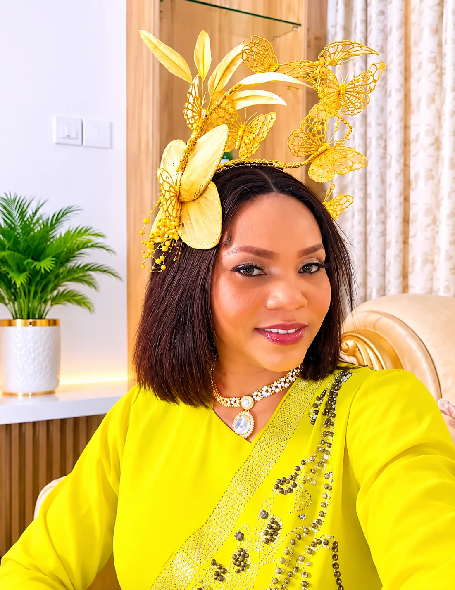
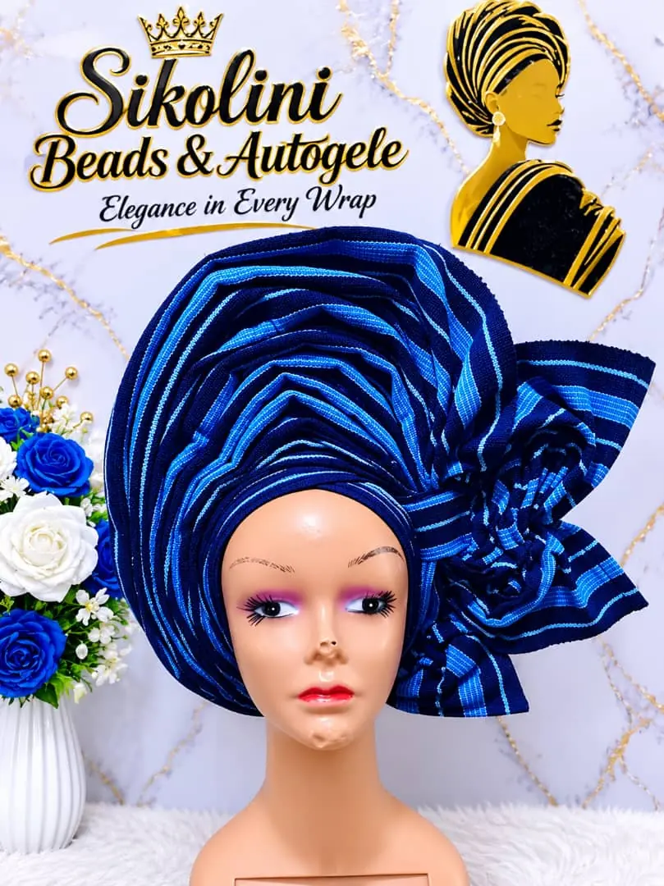
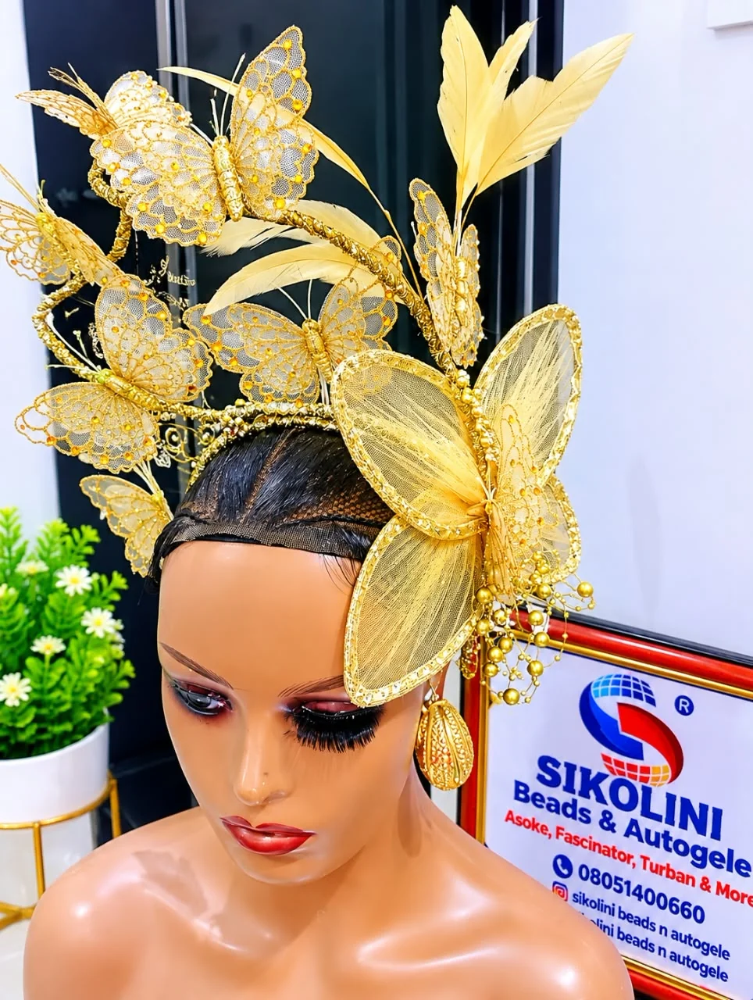
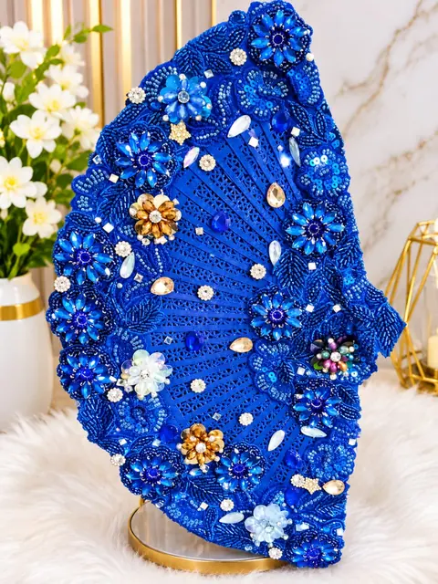
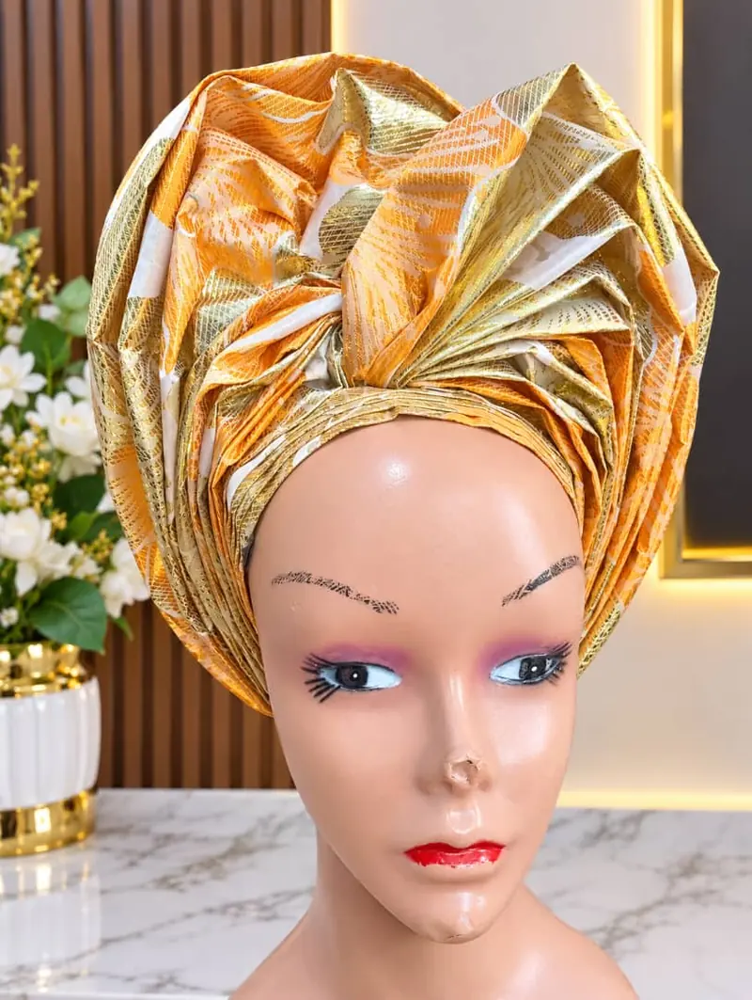
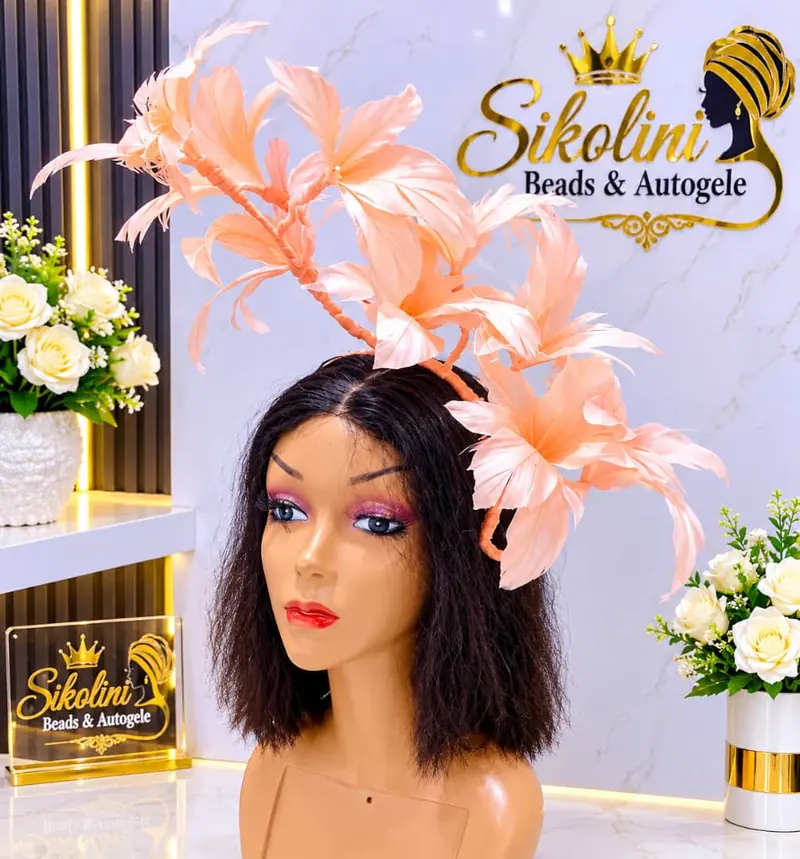

Quality & craftsmanship
Beautiful fashion pieces with attention to the details.
AUTOGELE & TRADITIONAL ACCESSORIES IN LAGOS
Sikolini Beads & Autogele offers Autogele, Aso-Oke, Sego, beads, fascinators, bridal hand fans and men's traditional caps, with professional training in bead making and creative crafts.




Beautiful fashion pieces with attention to the details.
Traditional elegance with your own expression of style.
Practical skills in bead making and creative crafts.
FIND YOUR FINISHING TOUCH
Explore Autogele and bridal hand fans, alongside fascinators and traditional fashion accessories. Visit us in Ogba or Ajah to discuss your occasion look.
Explore all eight specialities ↗A statement finishing touch, inspired by the beauty and presence of gele.

Explore bead details to complement your colours, personality and occasion.
Elegant fascinators for weddings, parties and special events.

Beautifully crafted hand fans to add elegance and sophistication to bridal appearances.
For Aso-Oke in Lagos, speak with Sikolini about traditional fabrics and accessories that complement your outfit. Our Sego in Lagos service also supports beautifully coordinated looks for cultural celebrations. Explore Aso-Oke or learn about Sego.
Your outfit, your colour story, your celebration. Start the conversation with what inspires you.

02 / OUR POINT OF VIEW
The finishing touch can become the part you remember most.
SIKOLINI AutoGele & Beads brings gele and bead styling into one brand expression. This is a space for celebrating colour, individuality and the joy of dressing for an occasion.
 CREATIVITY, IN EVERY DETAIL
CREATIVITY, IN EVERY DETAIL
PROFESSIONAL TRAINING
We offer training in bead making and creative crafts, equipping individuals with practical skills to develop their creativity and entrepreneurial potential.
Your Style, Our Creativity, Our Passion!
Enquire about training ↗03 / START SIMPLY
Let us know the date and the kind of celebration you are dressing for.
Bring your colours, outfit details and any style inspiration you love.
Ask about suitable options, availability and the next steps.
04 / THE GALLERY
Discover a selection of gele, headpieces and finishing details from our collection.
Explore the lookbook
FIND SIKOLINI IN LAGOS
Visit our Mainland or Ajah office. Chat with us to arrange your visit.
LET’S BRING YOUR LOOK TOGETHER
Have your occasion date, preferred colours and service of interest ready for your enquiry.
START YOUR ENQUIRY
Tell us about your occasion and preferred style. Start your enquiry on WhatsApp or through our contact page.
Prepare your enquiry